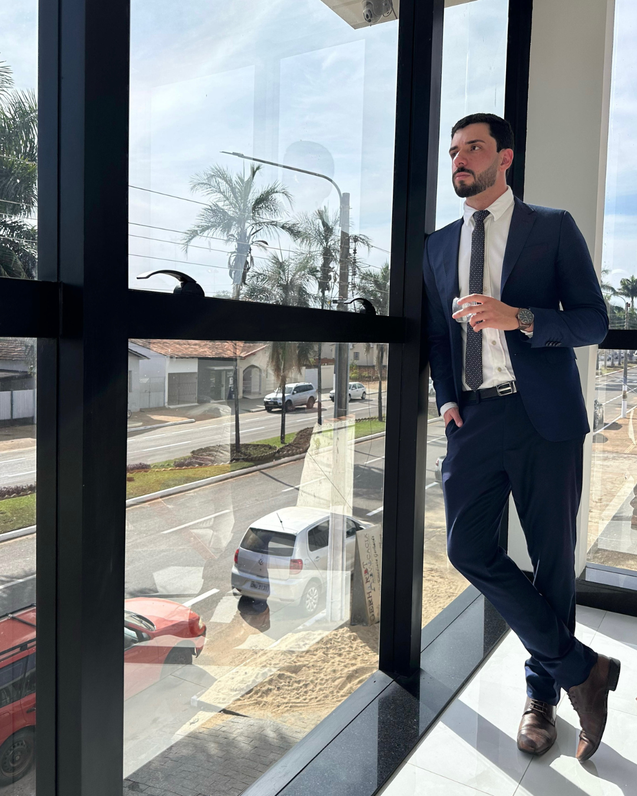
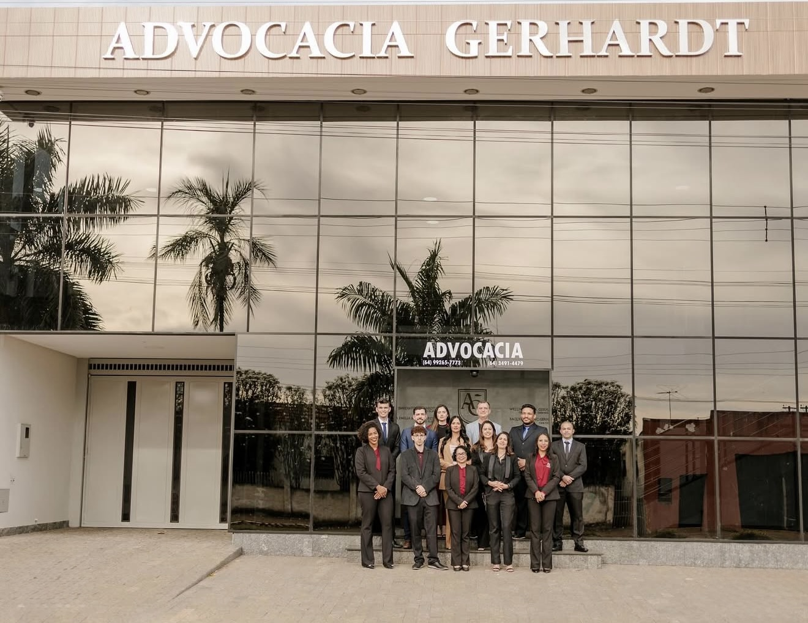
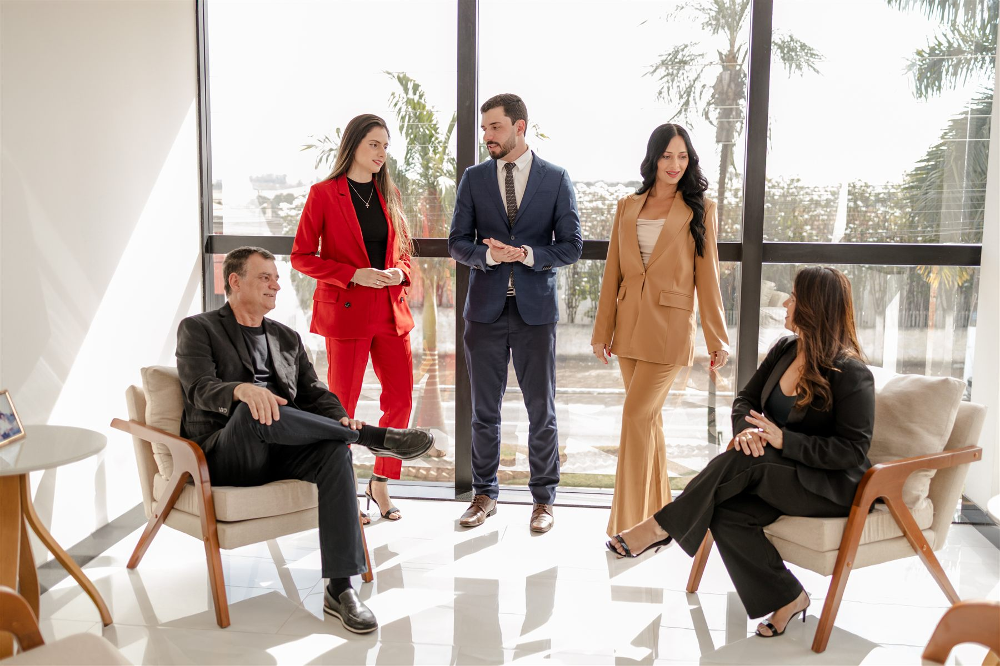

Familiar Preso?
Intervenção imediata em delegacias e flagrantes.
Atuação imediata em flagrantes, audiência de custódia, intimação policial, habeas corpus e processos criminais urgentes. Atendimento direto pelo WhatsApp.

Acione nosso plantão criminal especializado 24h em Uberlândia e região.
Intervenção imediata em delegacias e flagrantes.
Acompanhamento técnico para reduzir riscos e orientar a atuação diante de atos policiais.
Defesa técnica voltada à análise da legalidade da prisão e das medidas cabíveis.
Atuação voltada à preservação de direitos e identificação de eventuais ilegalidades.
Atuação técnica em situações criminais urgentes, investigações e processos penais.
Atuação em delegacia, análise da legalidade da prisão e medidas cabíveis desde os primeiros atos.
Defesa técnica para análise da prisão, pedido de liberdade provisória e medidas cautelares cabíveis.
Medida cabível para questionar prisões ilegais, abusivas ou situações de constrangimento ilegal.
Orientação antes de comparecer à delegacia, prestar depoimento ou participar de atos investigativos.
Análise da legalidade da medida, preservação de direitos e providências diante de abusos.
Defesa técnica em investigações e processos envolvendo acusação de tráfico de drogas.
Atuação em medidas protetivas, investigação e processos envolvendo violência doméstica.
Defesa em acusações patrimoniais, incluindo roubo, furto, receptação e situações relacionadas.
Atuação em casos de crimes dolosos contra a vida, com análise técnica e estratégia defensiva.
Defesa em crimes tributários, lavagem de dinheiro, corrupção e outras acusações econômicas.
Não encontrou sua situação?
Falar com Advogado Criminalista AgoraEntenda os próximos passos após entrar em contato com um advogado criminalista.
Você explica a situação de forma objetiva e envia as informações iniciais do caso.
Avaliamos a fase do caso, os riscos envolvidos e a necessidade de atuação imediata.
Indicamos o caminho jurídico mais adequado, como atuação em delegacia, audiência de custódia, habeas corpus ou defesa processual.
Após a contratação formalizada, iniciamos a atuação com sigilo, técnica e prioridade.
O atendimento criminal em Uberlândia é conduzido pelo Dr. Victor Gerhardt, com suporte de toda equipe da Advocacia Gerhardt — família de advogados com presença regional em Minas Gerais e Goiás.
Em situações criminais, a defesa exige urgência, sigilo e organização. A estrutura da Advocacia Gerhardt oferece base física, equipe jurídica e suporte institucional para uma atuação técnica desde os primeiros atos.


Sob liderança institucional do Dr. Wellington Gerhardt, a Advocacia Gerhardt consolidou uma estrutura familiar de advogados com atuação regional. Na área criminal, essa base reforça o atendimento conduzido pelo Dr. Victor Gerhardt, com discrição, técnica e estratégia.
A Advocacia Gerhardt conta com unidades físicas em cidades estratégicas de Minas Gerais e Goiás, reforçando o suporte institucional ao atendimento conduzido pelo Dr. Victor Gerhardt.
Uberlândia/MG · Aparecida de Goiânia/GO · Caldas Novas/GO · Ipameri/GO · Campo Alegre/GO
Precisa de atendimento criminal com urgência?
Falar com Advogado Criminalista AgoraAtendimento criminal direto, estratégico e sigiloso em Uberlândia e região.
O atendimento criminal é conduzido diretamente pelo Dr. Victor Gerhardt, com foco em urgência, análise técnica e definição de estratégia desde os primeiros atos. Em casos criminais, cada decisão tomada no início pode influenciar o andamento da defesa.
Com suporte da estrutura física e da equipe da Advocacia Gerhardt, o atendimento une presença regional, organização e sigilo para lidar com situações sensíveis como flagrantes, intimações policiais, audiências de custódia, habeas corpus e processos criminais.
O primeiro contato é direcionado para análise criminal objetiva, com orientação sobre a urgência, os riscos e os próximos passos possíveis.
Suporte em situações como prisão em flagrante, audiência de custódia, intimação policial, busca e apreensão e necessidade de habeas corpus.
A defesa começa na leitura correta do cenário: fase do caso, documentos disponíveis, riscos processuais e medidas juridicamente cabíveis.
Atendimento com suporte da Advocacia Gerhardt, equipe jurídica e unidades físicas em Minas Gerais e Goiás.
Casos criminais exigem cuidado absoluto com informações sensíveis, documentos, conversas e exposição do cliente ou da família.
Precisa falar com um advogado criminalista?
Falar com Advogado Criminalista AgoraRespostas rápidas para quem precisa de orientação criminal com urgência.
Sim. O atendimento pode ser realizado em situações urgentes, como prisão em flagrante, audiência de custódia, intimação policial, busca e apreensão e necessidade de habeas corpus.
Sim. Familiares podem entrar em contato para relatar a situação, informar onde ocorreu a prisão e enviar os dados iniciais necessários para análise do caso.
O ideal é buscar orientação jurídica antes de prestar depoimento ou comparecer a qualquer ato policial, especialmente quando houver risco de investigação, prisão ou acusação criminal.
Sim. A atuação em audiência de custódia envolve análise da legalidade da prisão, avaliação de eventual pedido de liberdade provisória, medidas cautelares e demais providências cabíveis ao caso.
Sim. Todas as informações compartilhadas são tratadas com sigilo profissional, conforme os deveres éticos da advocacia.
Ainda tem dúvidas ou precisa de atendimento criminal agora?
Falar com Advogado Criminalista AgoraFale diretamente pelo WhatsApp com um advogado criminalista em Uberlândia.
Chamar no WhatsApp Agora